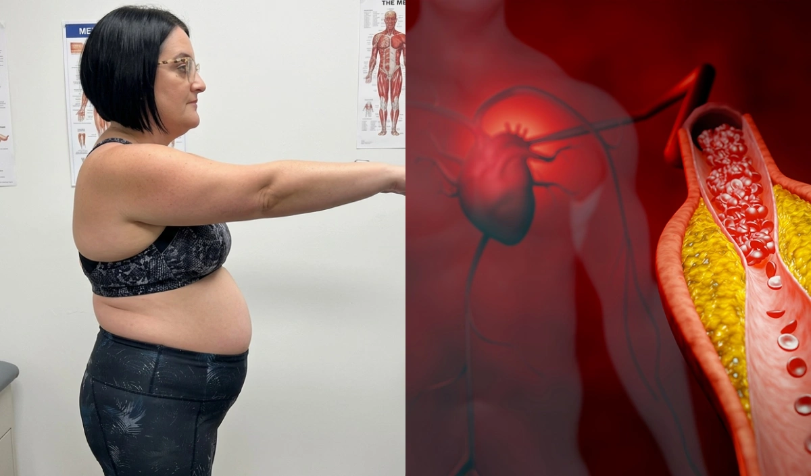
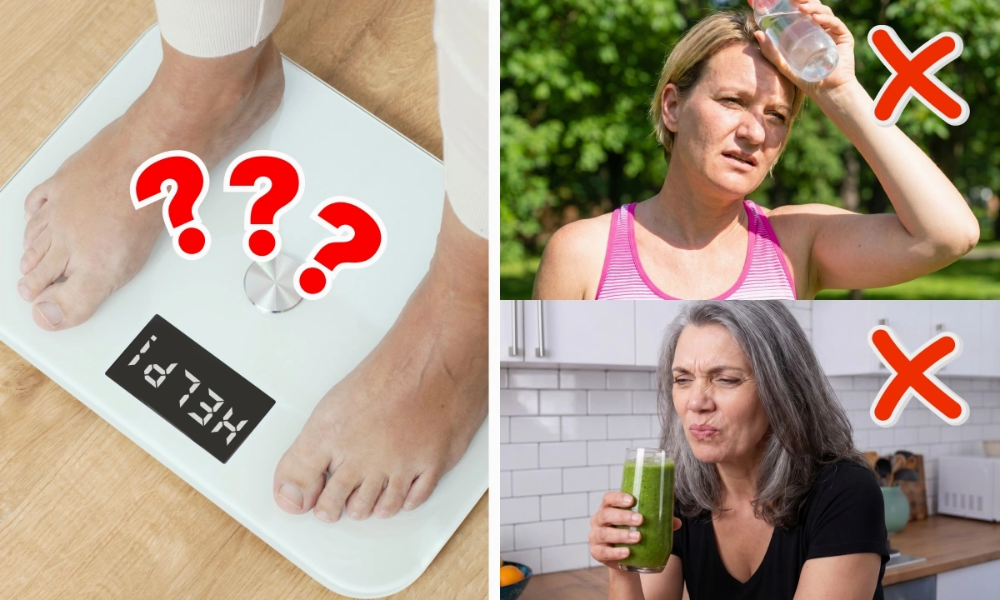
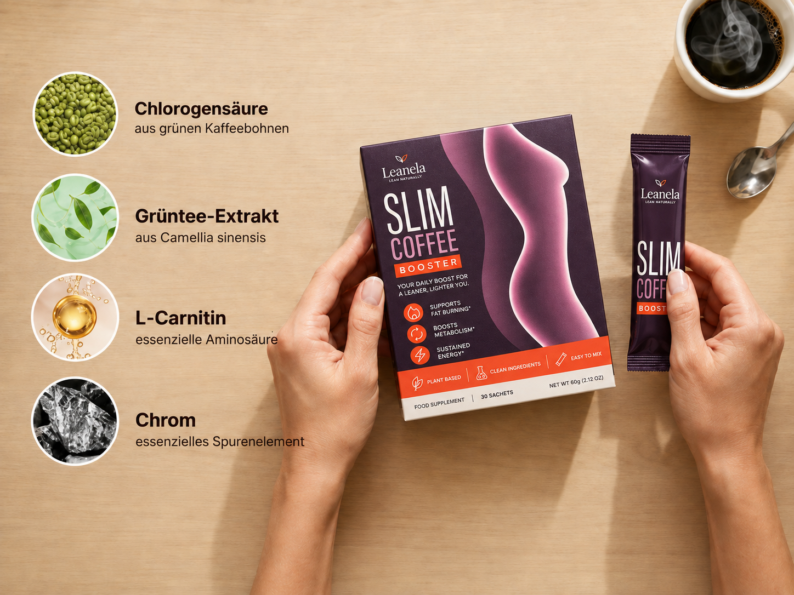
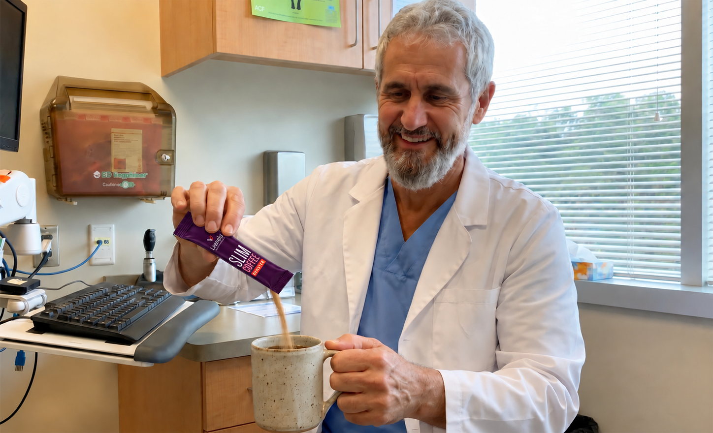
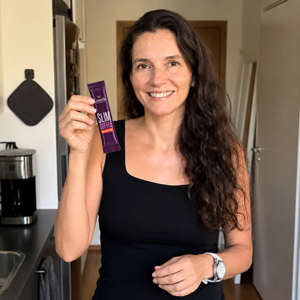
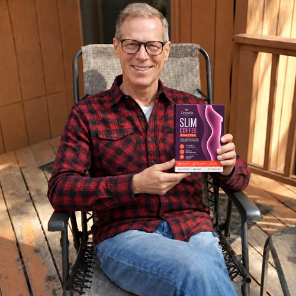
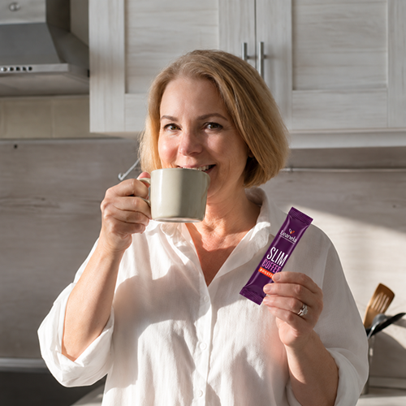
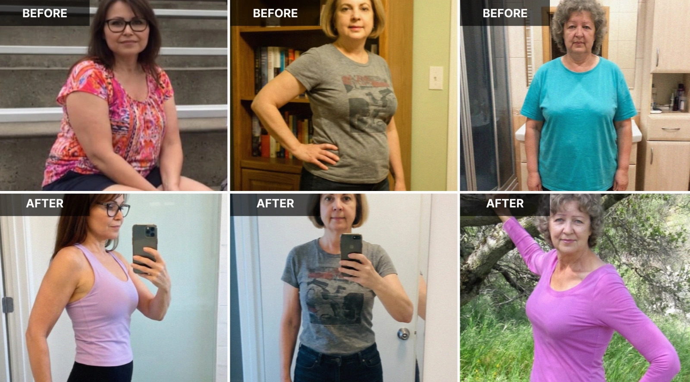
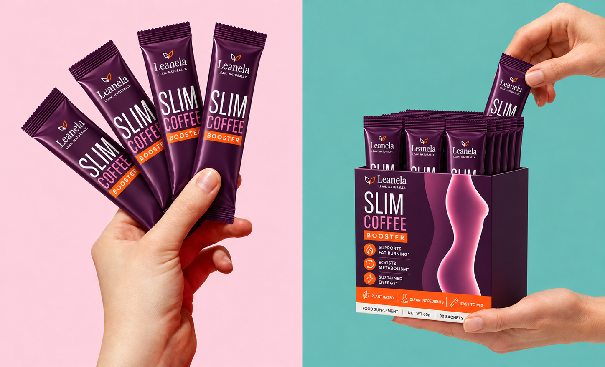
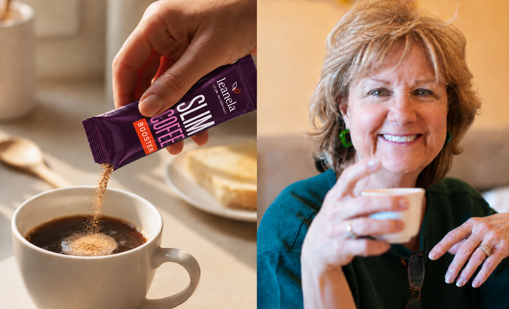

exklusiv
Ein Herzspezialist mit 20 Jahren Erfahrung erklärt, warum Bauchfett ein kardialer Notfall ist – und welches tägliche Ritual dem Körper helfen kann, es freizusetzen, ganz ohne Ernährungsumstellung.
Die meisten Menschen halten Bauchfett für ein rein kosmetisches Problem.
Dr. Markus Hoffmann, Facharzt für Kardiologie mit über zwei Jahrzehnten klinischer Erfahrung, hat gesehen, was es wirklich ist.
„Bauchfett sitzt nicht einfach nur da und sieht schlecht aus", erklärte er uns. „Es ist biologisch aktiv. Es produziert entzündungsfördernde Signale, bringt Hormone durcheinander und übt direkten Druck auf die Herz-Kreislauf-Funktion aus. Jedes Jahr sehe ich Patienten, die alles richtig machen – sie zählen Kalorien, gehen ins Fitnessstudio – und dieses Fett bewegt sich kaum. Dafür gibt es einen Grund."
Dieser Grund, so sagt er, ist etwas, worüber die meisten Ärzte mit ihren Patienten nie sprechen.
Und er erklärt, warum Zehntausende Menschen jetzt ein einfaches Pulver in ihren Morgenkaffee rühren – und feststellen, dass ihre Taille endlich schmaler wird.

Dr. Hoffmann arbeitet vor allem mit Patienten mit erhöhtem Herz-Kreislauf-Risiko. Viele sind übergewichtig. Die meisten haben es versucht – ernsthaft versucht – Gewicht zu verlieren.
Im Laufe der Jahre bemerkte er ein Muster, das ihn beunruhigte.
„Ich hatte Patienten, die alles taten, was sie tun sollten. Kalorien reduzieren, 10.000 Schritte gehen, ihre Lieblingsspeisen aufgeben. Und die Waage bewegte sich einfach nicht – oder ein wenig, dann Stillstand. Gleichzeitig blieb ihr kardiales Risiko erhöht."
Er begann, in der Stoffwechselforschung zu graben. Was er fand, überraschte selbst ihn.
„Das Problem ist nicht die Disziplin. Das Problem ist die Insulinsensitivität. Wenn sie beeinträchtigt ist – und das geschieht still bei Millionen von Erwachsenen – erhalten die Fettzellen ein dauerhaftes Signal, sich zu verriegeln. Alles speichern. Nichts freisetzen. Sie können Kalorien reduzieren, so viel Sie wollen. Sie können eine verriegelte Zelle nicht öffnen, indem Sie weniger essen."
Dr. Markus Hoffmann, Facharzt für Kardiologie

Das ist direkt relevant für das Herz.
Viszerales Fett – das tiefe Bauchfett, das die Organe umgibt – unterscheidet sich stoffwechseltechnisch von Fett, das anderswo gespeichert wird. Es setzt Fettsäuren und entzündungsfördernde Verbindungen frei, die das Herz-Kreislauf-System direkt belasten. Es zu bekämpfen geht nicht nur darum, schlanker auszusehen. Für Dr. Hoffmanns Patienten ist es eine klinische Priorität.
„Was mich frustrierte, war, dass die Standardempfehlungen dieses spezifische Fett nicht bewegten. Ich begann zu untersuchen, was die Forschung tatsächlich bei der Insulinsensitivität als wirksam zeigt – keine pharmazeutische Intervention, sondern Wirkstoffe, die Menschen in ihre tägliche Routine einbauen können."
Dr. Markus Hoffmann – Erklärung eines Kardiologen
Wenn die Insulinsensitivität beeinträchtigt ist, erhalten die Fettzellen durch überschüssiges zirkulierendes Insulin ein ständiges „Verriegelungssignal". Das in diesen Zellen gespeicherte Fett kann nicht als Energie freigesetzt werden – selbst bei einem Kaloriendefizit. Der Körper baut zuerst Muskeln zur Energiegewinnung ab. Das Fett bleibt eingeschlossen.
Stellen Sie es sich wie einen Lagerraum mit einem klemmenden Schloss vor.
Alle Energie, die Sie brauchen, ist drinnen. Jahrelang gespeichertes Fett, das darauf wartet, verbrannt zu werden. Aber das Schloss klemmt. Sie können fester gegen die Tür drücken – weniger essen, mehr bewegen – und nichts öffnet sich. Der Inhalt bleibt genau dort, wo er ist.
Deshalb fühlen sich Patienten, die täglich 500 Kalorien einsparen, oft erschöpft – der Körper verbrennt Muskeln, nicht Fett. Die Fettzellen sind physiologisch verriegelt.
„Sobald ich diesen Mechanismus verstand", sagt Dr. Hoffmann, „verstand ich auch, warum bestimmte natürliche Wirkstoffe in der Literatur so interessante Ergebnisse zeigten. Sie waren nicht nur Stoffwechsel-Booster im allgemeinen Sinne. Sie wirkten direkt auf das Sensitivitätsproblem – auf das Schloss selbst."
Nach Sichtung der klinischen Literatur identifizierte Dr. Hoffmann vier natürlich vorkommende Wirkstoffe mit aussagekräftigen Daten zu Insulinsensitivität, Fettstoffwechsel und Stoffwechselrate – dieselben biologischen Pfade, die, wenn sie gemeinsam angegangen werden, helfen können, gespeichertes Fett freizusetzen.
Er hatte damit gerechnet, monatelang jeden Wirkstoff separat mit Patienten zu testen. Dann machte ihn eine Kollegin auf etwas aufmerksam: einen Leanela Slim Coffee Booster, der alle vier kombinierte – konzipiert, um sich in der Morgentasse aufzulösen, ohne den Geschmack zu verändern oder eine weitere Tablette in die Routine einzufügen.

Chlorogensäure (aus grünen Kaffeebohnen) – Kann die Glukoseaufnahme in den Blutkreislauf verlangsamen und so eine gesündere Insulinreaktion unterstützen. „Das ist der Wirkstoff, der mich zuerst aufmerksam gemacht hat", merkt Dr. Hoffmann an. „Die Datenlage zu Chlorogensäure und Glukosestoffwechsel ist beachtlich."*
Maulbeerblattextrakt – Enthält Pflanzenstoffe, die einen gesunden Blutzuckerspiegel unterstützen können, indem sie abmildern, wie schnell Zucker nach einer Mahlzeit ins Blut gelangt. „Maulbeerblatt wirkt am Punkt der Aufnahme", erklärt er. „Es hilft, den Anstieg abzuschwächen, bevor er die Zellen überhaupt erreicht."*
L-Carnitin – Unterstützt den Transport von Fettsäuren in die Mitochondrien, wo sie zur Energiegewinnung verbrannt werden können. „Sobald sich das Schloss öffnet, müssen die Fettsäuren immer noch zum Ofen gelangen. L-Carnitin hilft dabei, sie dorthin zu befördern."*
Camellia Sinensis (Grüntee-Extrakt) – Reich an Catechinen, die für die Unterstützung der Fettoxidation und Thermogenese bekannt sind – dem kalorienverbrennenden Prozess des Körpers.* „Es hält den Ofen auf einer höheren Temperatur, sobald das Fett endlich in Bewegung ist."
„Was diese Kombination aus kardiologischer Sicht interessant macht", sagt Dr. Hoffmann, „ist nicht nur, dass sie die Gewichtsabnahme unterstützen kann. Sie zielt auf viszerales Fett über den Stoffwechselweg ab – genau dort, wo das kardiovaskuläre Risiko sitzt."

Kaffee selbst ist kein neutraler Träger für diese Wirkstoffe. Er ist ein aktiver.
Koffein erhöht natürlicherweise die Stoffwechselrate und bringt die Fettverbrennungssysteme des Körpers in den Stunden nach dem Konsum auf Touren. Studien deuten darauf hin, dass es die Thermogenese steigert – den Prozess, bei dem der Körper Wärme erzeugt und Kalorien verbrennt.
„Kaffee schafft ein Stoffwechselfenster", erklärt Dr. Hoffmann. „In den ersten Stunden nach Ihrer Morgentasse ist Ihr Körper bereits vorbereitet. Wenn Sie in diesem Fenster die richtigen Wirkstoffe hinzufügen, verstärkt sich die Wirkung. Sie kämpfen nicht gegen Ihre Biologie – Sie arbeiten mit ihr."
1 Tasse. Mehr braucht es nicht. Ein Beutel in Ihren gewohnten Morgenkaffee gerührt.
Und bevor die Patienten fragen – was sie immer tun – geht Dr. Hoffmann direkt auf das offensichtliche Anliegen ein. „Es löst sich rückstandslos auf. Es verändert weder den Geschmack des Kaffees noch die Farbe oder das Aroma. Patienten sagen mir, sie vergessen, dass es überhaupt drin ist. Würde es den Kaffee verändern, würde es niemand konsequent verwenden – und Konsequenz ist genau der Punkt."
Dr. Hoffmann begann, geeigneten Patienten Leanela Slim Coffee Booster als Teil eines umfassenderen Stoffwechsel-Unterstützungsprotokolls zu empfehlen. Nicht als Ersatz für Lebensstiländerungen, sondern als etwas, das die physiologische Barriere angeht, die diese Änderungen unwirksam machte.
Die Rückmeldungen, sagt er, waren konsistent.
„Was Patienten am häufigsten berichteten, war, dass sich die Heißhungerattacken veränderten. Wenn sich die Insulinsensitivität verbessert, wird der Blutzucker stabiler. Der Vormittagstiefpunkt, der Hungerschub um 15 Uhr – das sind direkte Folgen eines instabilen Blutzuckers. Wenn sich das stabilisiert, folgt der Heißhunger nach. Und wenn der Heißhunger nachlässt, wird alles andere einfacher."
Das sagen die Anwender:

„Fünf Jahre lang hat mein Arzt mir jedes Jahr gesagt, ich soll abnehmen. Ich habe alles getan, was er sagte, und es tat sich einfach nichts. Vor drei Wochen habe ich das in meinen Kaffee gerührt, und zum ersten Mal sitzt meine Hose wirklich locker. Ich habe sonst nichts verändert."
— Sabine, 54 ⭐⭐⭐⭐⭐

„Das mit dem Heißhunger stimmt wirklich. Früher habe ich jeden Abend um 22 Uhr die Küche gestürmt, ohne Ausnahme. Das ist praktisch vorbei. Und ich habe in einem Monat etwa 3 Kilo abgenommen, ohne das Gefühl zu haben, auf Diät zu sein."
— Michael, 49 ⭐⭐⭐⭐⭐

„Meine Hausärztin erwähnte bei der letzten Kontrolle, dass meine Blutzuckerwerte sich verbessert hätten. Ich stelle keine medizinischen Behauptungen auf, aber das Timing passt. Auch mein Taillenumfang ist so niedrig wie seit sechs Jahren nicht mehr."
— Petra, 61 ⭐⭐⭐⭐⭐

Dr. Hoffmann wählt seine Worte sorgfältig. Schließlich ist er Arzt.
„Ich möchte präzise sein bei dem, was ich sage – und bei dem, was ich nicht sage. Ich sage nicht, dass dies ein Ersatz für medizinische Betreuung ist. Ich sage nicht, dass es bei jedem funktioniert."
„Was ich sage, ist: Für eine bestimmte Gruppe von Patienten – Erwachsene in den 40ern und 50ern mit hartnäckigem Bauchfett, normalem oder leicht erhöhtem Blutzucker und einer Vorgeschichte, in der sie das Richtige getan haben, ohne Ergebnisse zu sehen – liegt das eigentliche Problem in der Stoffwechselsensitivität. Und es gibt evidenzbasierte natürliche Wirkstoffe, die genau dort ansetzen. Wenn diese Wirkstoffe in einer Form verfügbar sind, die Menschen wirklich täglich anwenden – und ein Kaffeezusatz ist genau das – ist das klinisch interessant."
Er hält inne.
„Die beste Intervention ist die, die der Patient tatsächlich konsequent durchführt. Das lässt sich in etwas integrieren, was Menschen ohnehin jeden Morgen tun. Das ist wichtiger, als viele denken."
‼️ BEGRENZTE VERFÜGBARKEIT ‼️
Einen Beutel in Ihren Morgenkaffee rühren. Das war's. Keine Ernährungsumstellung. Keine komplizierten Routinen. Nur Ihre gewohnte Tasse – die härter arbeitet.

Die Verfügbarkeit ist begrenzt und die aktuelle Aktion – 70 % Rabatt – gilt nur, solange der Vorrat reicht.
Der Ablauf in drei Schritten:
1️⃣ Klicken Sie auf den Link unten, um Preis und Verfügbarkeit heute zu prüfen.
2️⃣ Wählen Sie Ihren Vorrat (die meisten Anwender starten für volle Ergebnisse mit einem 2-Monats-Vorrat).
3️⃣ Rühren Sie einen Beutel in Ihren Morgenkaffee. Jeden Morgen. Das ist das gesamte Protokoll.
Dr. Hoffmanns Fazit war einfach:
„Sie kochen ohnehin bereits Kaffee. Die einzige Frage ist, ob dieser Kaffee etwas Nützliches für Ihren Stoffwechsel tut – oder Sie einfach nur wach macht."

⚡ Flash Sale aktiv · 70 % Rabatt · Lagerbestand knapp